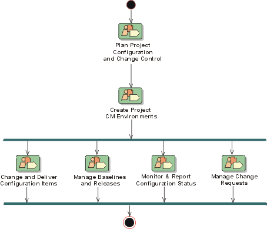

Development Case: Configuration and Change Management
Discipline 
There are no formal changes to the Configuration Management discipline - it is used as is (see the RUP Discipline: Configuration and Change Management).

Artifacts
| Artifacts | How to use | Review Details | Templates/ Examples |
|||
| Incep | Elab | Const | Trans | |||
| Change Request | Won't | Could | Must | Must | Reviewed by the CCB | Rational® ClearQuest™. See RUP Tool Mentor: Establish the Change Request Process. |
| Configuration Audit Findings | Won't | Could | Should | Should | Formal- External |
Microsoft® Word™ |
| Configuration Management Plan | Could | Must | Must | Must | Formal- External |
Microsoft® Word™. See RUP Template: Configuration Management Plan |
| Project Repository | Could | Must | Must | Must | None | Rational® ClearCase™ |
| Workspace | Could | Must | Must | Must | None | Rational® ClearCase™ |
Notes on the Artifacts
None
Reports
None
Notes on the Reports
None
Additional Review Procedures
Change Control Board (CCB) - The CCB meets once a fortnight to review all new change requests.
Other Issues
None
Configuring The Discipline
When configuring the Configuration and Change Management Discipline help can be found in:
- RUP Discipline: Environment
- RUP Activity: Develop Development Case
- RUP Guidelines: Important Decisions in Configuration and Change Management
You should also familiarize yourself with:
- RUP Discipline: Configuration and Change Management
- RUP Artifacts: Configuration and Change Management
- RUP Concepts: Configuration and Change Management